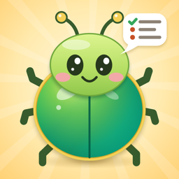

Your little helper that always remembers for you.
Talk to a little JuneBug in your hand. Tell it your dream before it fades, however strange. JuneBug is a free voice dream journal with short lucid-dreaming tips, and your voice lists are still here.
JuneBug used to be called SaySo. Same app, same lists - nothing lost.
Wake up, tap, and say what you dreamed. JuneBug keeps it in your dream journal with the date, how it felt, and whether you knew you were dreaming. Your lists still work the same way: say what you'd like to keep track of - Mom's recipes, birthdays, chores - and JuneBug makes the list for you, with the right boxes, dates and reminders. On iPhone Duo and iPad it opens like a book.
Everything you say stays on your phone. From version 1.2, JuneBug never sends your dreams or lists anywhere: no servers of our own, no account, no tracking, no iCloud copying, and nobody at JuneBug ever sees them. No AI interprets your dreams. (On Android, everything stays on your phone only: JuneBug for Android doesn't use the internet at all.) Privacy Policy
Making a list from your words uses Apple Intelligence, on the device. Dreams you tell your dream journal never go through it. If your iPhone doesn't have it turned on, every one of the 30 ready-made keepers still works, and so does everything else.
Family sharing ended in 1.2: a list you shared stays on your phone as your own copy. If you used iCloud with an earlier version, you can delete the old copy on your iPhone in Settings, then your name, iCloud, Manage Storage, JuneBug.
Nothing is lost by one tap: things you delete wait in Recently Deleted (Settings) until you put them back.
JuneBug was partly inspired by a curious coincidence Carl Jung described. A woman was telling him her dream about a golden scarab when something tapped at his window. He opened it, caught a beetle, and handed it to her. Our Southern green June bug is a close cousin of that very beetle.
One Hot Summer: Pickwick Lake - learn to water ski on Pickwick Lake in the summer of 1990, or just ride along on a free boat tour of the lake. Free, no ads, nothing to buy.
Dialed In: Guitar Rigs - how about 90 great guitarists got their sound, with sources, plus starting settings for the amp you own at home. Free, no ads, nothing to buy.
Questions, problems or ideas: artjoyce@gmail.com